A Process Journal documenting the capture, editing, compositing and animation of a lens-based image sequence across six tasks — from database construction through to motion design experiments in After Effects.
The sequence was shot on a Canon 80D on a tripod outside the QCAD building at South Bank: a single figure walking toward the camera across grass, against a hard-edged architectural backdrop of white panels, glass and red cladding. A moving figure was chosen because the incremental change from frame to frame — stride, posture, distance — gives the animation something to work with, while the fixed architecture holds the frame still around it.
Week 01 · Task 01
Image Database Creation
Preparing the drive and building the file directory structure that forms the basis for the image database, then creating the Lightroom Classic Catalogue file that indexes it.
root Charlie_Roberts_MoDesapplication folders 6catalogue 1740QCA.lrcatbackup separate drive
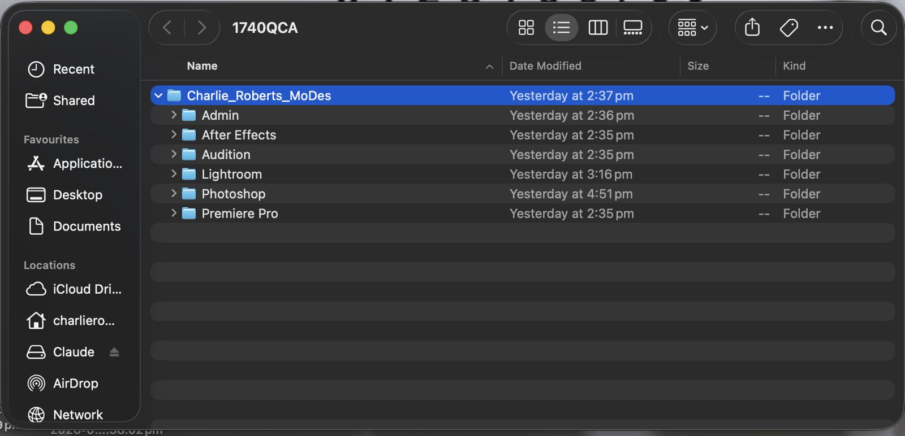
Database rootThe top level of the database. A single named root folder, Charlie_Roberts_MoDes, holds one folder per application in the pipeline — Admin, After Effects, Audition, Lightroom, Photoshop, Premiere Pro — so that every file has one correct location before any work begins.
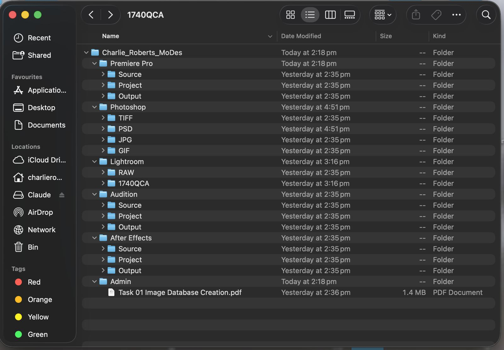
Full directory structureThe structure fully expanded. Each application folder is subdivided by function — Source, Project, Output — while Photoshop is subdivided by file format (TIFF, PSD, JPG, GIF) and Lightroom separates the RAW originals from the 1740QCA catalogue. Separating source files from project files from outputs is what keeps the links between applications intact as the database grows.
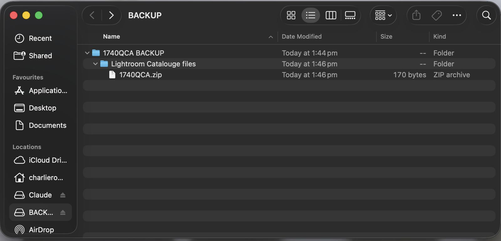
Back-up catalogueThe catalogue backup held on a physically separate drive. Because the QCAD lab machines are wiped nightly and the catalogue records every non-destructive edit rather than the images themselves, losing the .lrcat would mean losing all editing work while leaving the RAW files untouched. Keeping the backup on a second drive, in a second location, protects against that.
Week 02 · Task 02
Capture, Import, Edit & Export
Capturing the sequence as RAW files, importing them into the Lightroom Classic catalogue, editing through non-destructive RAW image processing, and exporting PSD (Photoshop Document) files into the database for compositing.
camera Canon 80Dformat RAW · CR2lens 37 mmexposure f/5.6 · 1/640 · ISO 125captured 114 framesexported 30 × PSD
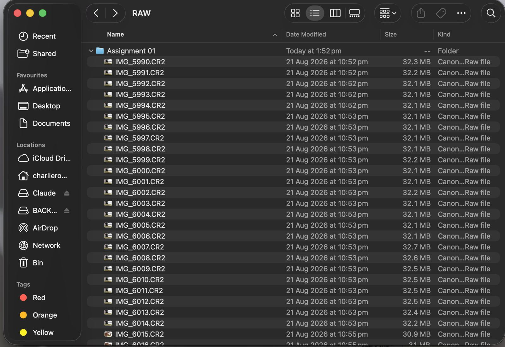
RAW camera files114 Canon .CR2 files in the RAW folder, around 32 MB each. Shooting RAW rather than JPG was essential to the rest of the workflow: the camera resets to JPG when powered down, and a JPG discards the tonal and colour latitude that the Develop Module edits below depend on.
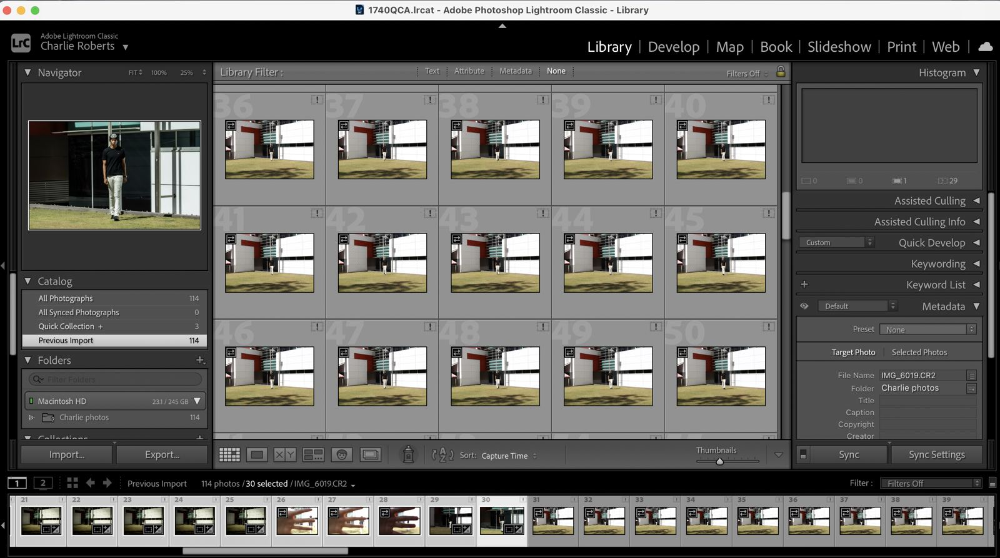
Import — Library moduleThe full Library module with the sequence imported into the 1740QCA.lrcat catalogue: 114 photographs, sorted by capture time, with 30 selected for export. The grid view makes the incremental change between frames legible — the figure advances slightly in each image, which is what makes the sequence animatable.
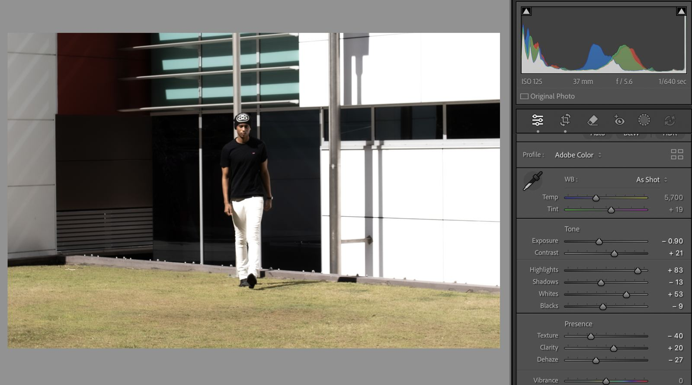
Editing 01 — Develop Module, Basics PanelA first treatment left on white balance As Shot (5,700 K, tint +19). Highlights pushed to +83 and Whites to +53 blow the building panels out to near-white, while Texture at −40 and Dehaze at −27 soften the surface detail. The result flattens the architecture into graphic blocks and isolates the figure against them.
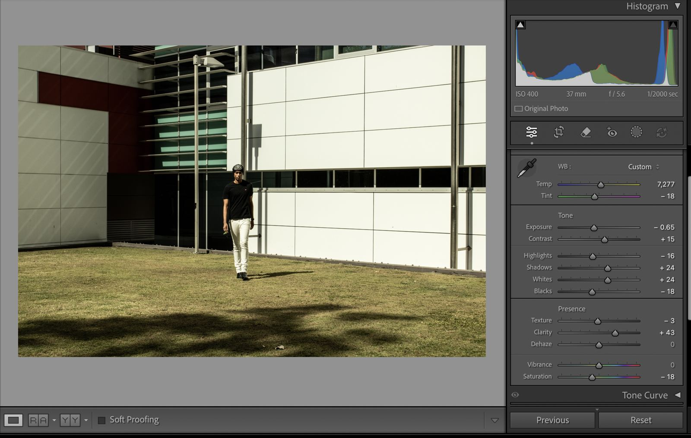
Editing 02 — colour temperature and clarityA custom white balance at 7,277 K with tint −18 warms the whole frame, while Clarity at +43 and Saturation at −18 harden mid-tone edges and drain colour at the same time. Compared with the previous edit this reads as heavier and more contrasted — the same capture producing a markedly different mood through non-destructive image editing alone.
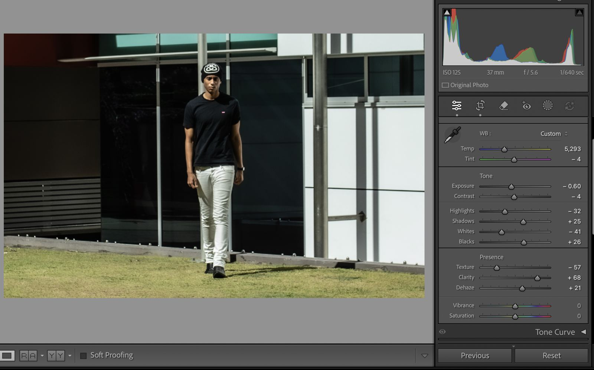
Editing 03 — cool treatmentTemperature pulled the other way to 5,293 K with tint −4. Clarity at +68 against Texture at −57 is a deliberately contradictory pairing: local contrast is amplified while fine surface detail is suppressed, giving the figure a slightly rendered, non-photographic quality.
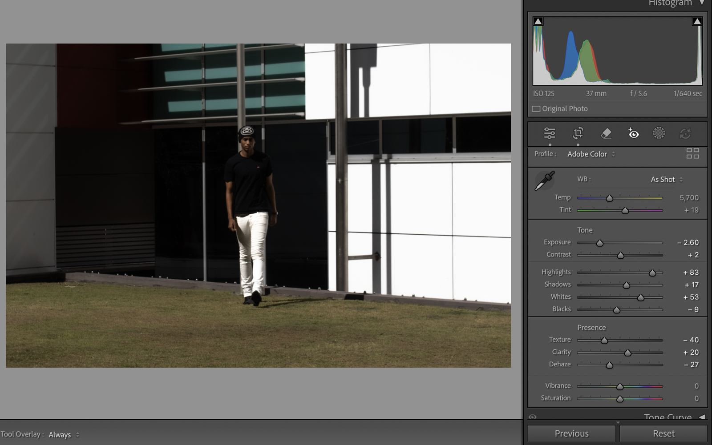
Editing 04 — exposure extremeExposure taken down to −2.60 with Highlights still at +83. This tests how far the RAW file can be pushed before it breaks: the shadow side of the building collapses to black while the sunlit panels hold detail, demonstrating the recovery range a RAW capture retains and a JPG would not.
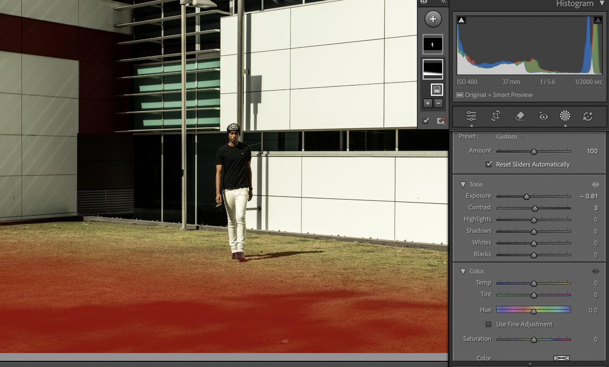
Local adjustment — maskingA mask isolating the foreground grass, shown in red overlay, carrying its own Exposure of −0.81. Masking moves the edit from global to local: the ground can be darkened to sit the figure forward without touching the exposure of the building behind.
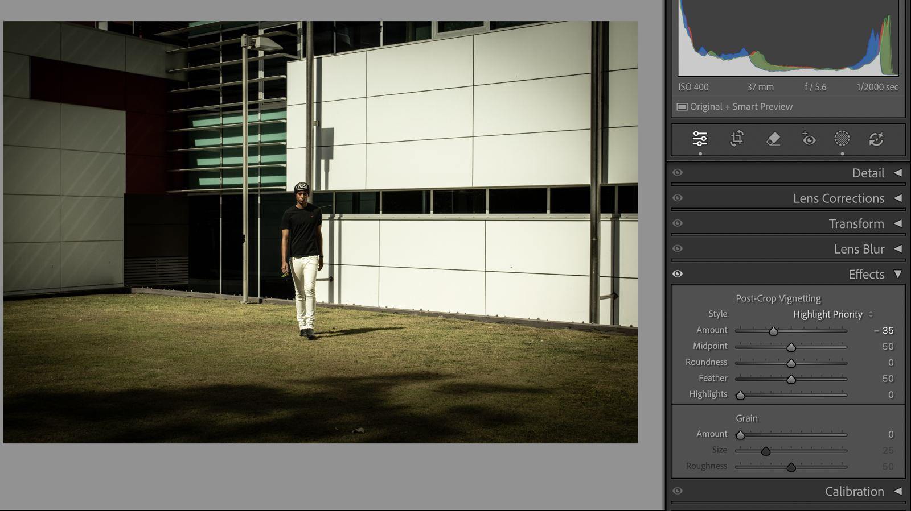
Effects — vignettingPost-Crop Vignetting at −35 on Highlight Priority. Darkening the frame edges pulls the eye to the centre of the composition — a small change, but one that reads across every frame of the sequence once animated.
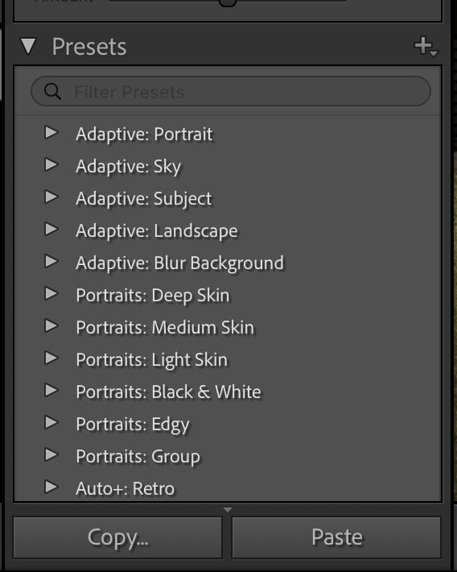
PresetsAdaptive and Portrait presets tested as starting points before hand-editing.
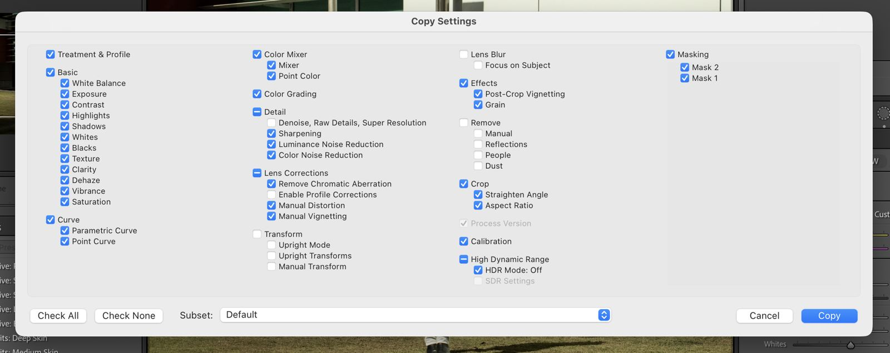
Copy SettingsCopying the develop settings — Basic, Curve, Colour Mixer, Effects, Crop and both masks — so a single treatment could be applied consistently across the whole sequence. Consistency matters here: an edit that varies frame to frame would flicker once animated.
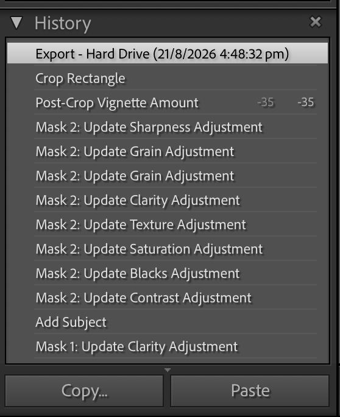
History — non-destructive recordThe History panel showing every step retained in order.
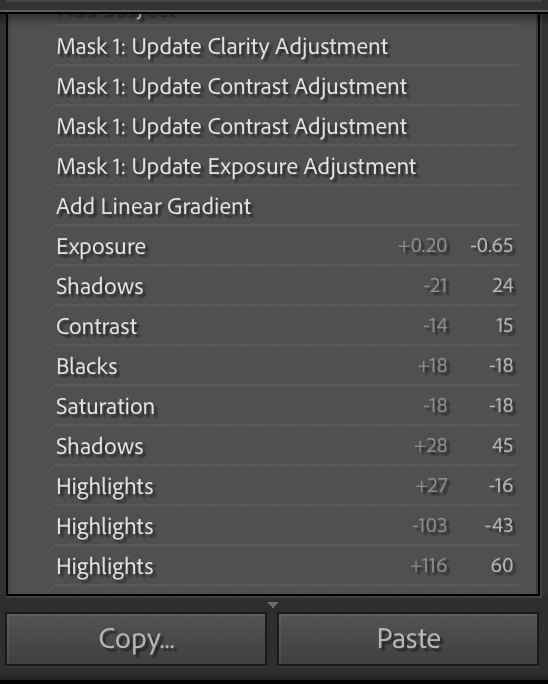
History — valuesEach entry records the before and after value. Nothing is written back to the CR2 — this list is the edit, which is what non-destructive RAW image processing means in practice.
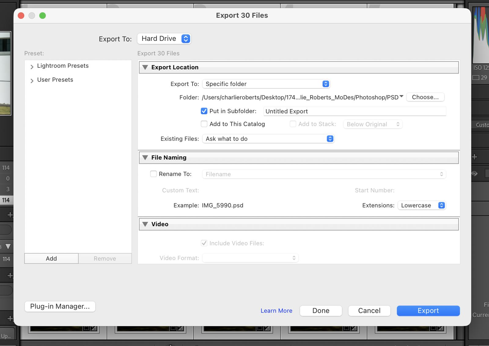
Exporting — destinationThirty files exported to a specific folder: Charlie_Roberts_MoDes/Photoshop/PSD. Exporting to the correct database location keeps the pipeline intact.
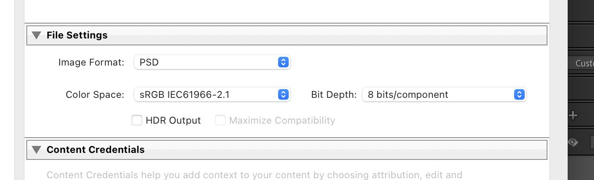
File settingsImage Format PSD, colour space sRGB, 8 bits per component — PSD to preserve layer capability in Photoshop, sRGB because the end point of the work is screen.
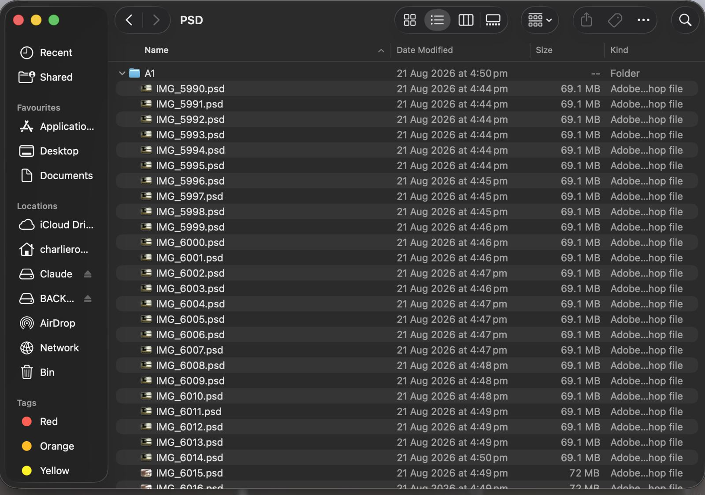
Exported PSDs in the databaseThe exported .psd files landed in Photoshop/PSD/A1, around 69 MB each. The jump from 32 MB RAW to 69 MB PSD is the cost of a flattened, full-resolution, editable document — worth noting when managing drive space across a sequence this long.
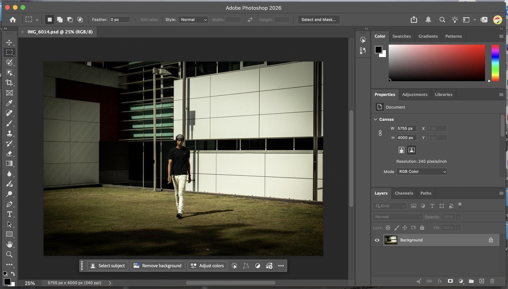
Image size and formatA PSD opened in Photoshop: 5755 × 4000 px at 240 ppi, RGB Colour, 8-bit. Confirming dimensions and mode at this point matters because every composite and animation downstream inherits them.
Week 03 · Task 03
The composite image
Experimenting in the Photoshop Layer panel to build composite images — the design elements that are used to create motion designs — using layers, masks, transparency & opacity, selections, and transformations & blending modes to produce visual and spatial changes within a single frame.
Selection for compositingA dedicated Composite_portrait collection of 13 frames pulled from the 114-image sequence, chosen because the figure occupies a clearly different position in each. Selecting for spatial separation rather than for the best single photograph is what makes the composite legible.
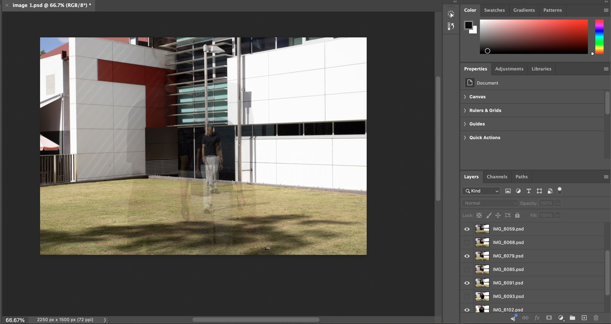
Transparency & opacityThe image sequence loaded as a layer stack, with visibility toggled on alternate layers. Where layers overlap, the figure becomes semi-transparent and reads as a ghost or motion trail — a single still frame that nonetheless describes movement through time.
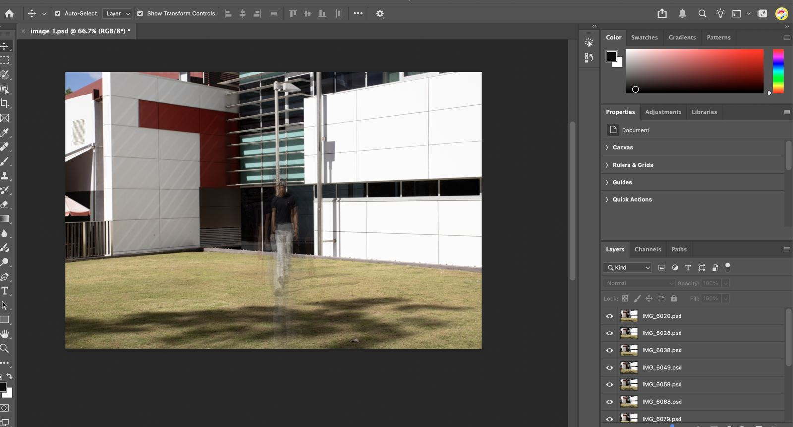
Layer stack — all visibleThe same document with the full stack switched on. Stacking every frame produces a dense, smeared column rather than distinct figures, which is what pushed the next stage: cutting the subject out so each instance could be placed deliberately.
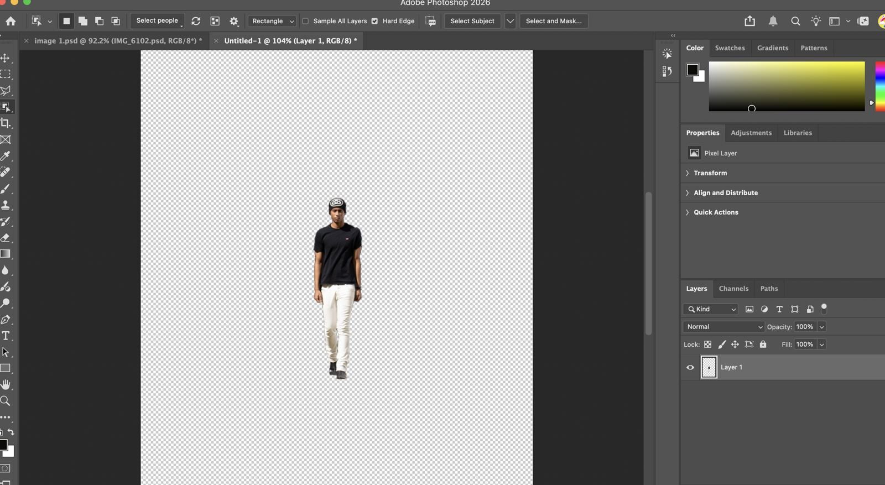
Selection — subject isolationThe figure isolated on a transparent background using Select Subject. Removing the background converts each frame from a photograph into a movable design element that can be positioned independently of where it was originally captured.
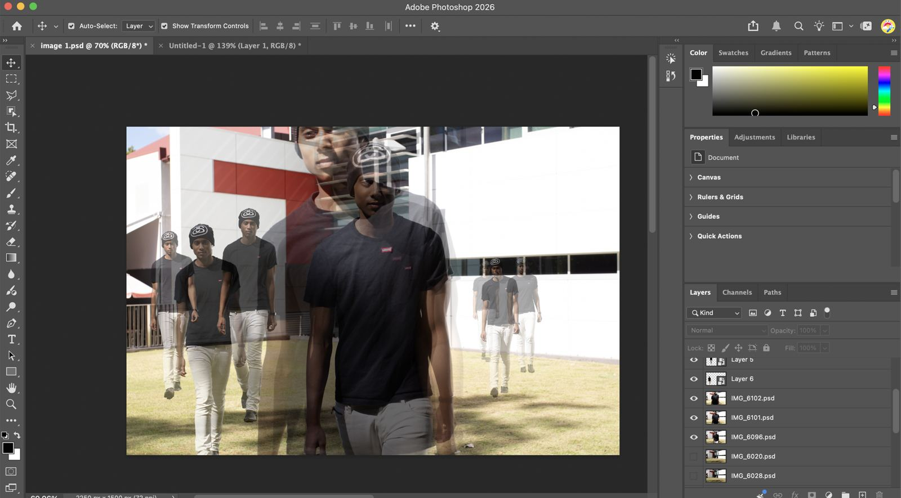
Composite — visual and spatial changesThe finished composite. Cut-out figures at varying scale and opacity are distributed across the frame while the original photograph remains as the background plate, and a large translucent portrait spans the upper half. Scaling the same subject differently within one frame creates a false depth — the eye reads the largest figure as nearest, which was never true in the capture.
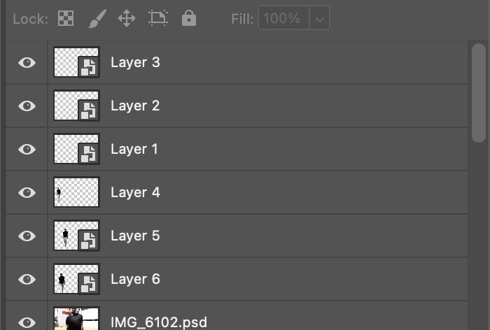
Layers panel — cut-outsLayers 1–6 hold the isolated figures, each on transparency, above the photographic plate.
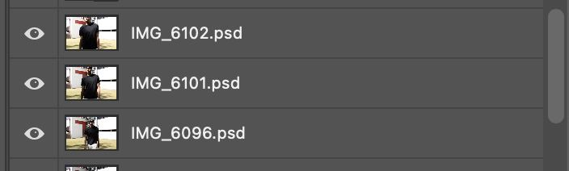
Layers panel — source framesBeneath them, the original PSDs remain live and named by frame number, so any instance can be revisited without re-cutting.
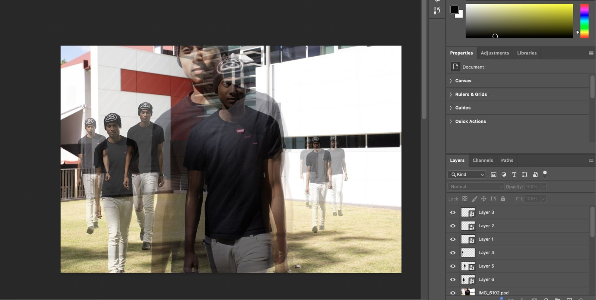
Cropping & resizingThe working document at 2250 × 1500 px, 72 ppi — deliberately reduced from the 5755 × 4000 px source. Dropping resolution at the compositing stage keeps a thirteen-layer file responsive and matches the resolution the GIF and video outputs actually need.
Week 04 · Task 04
The GIF — looping moving image
Animating the composite layers through the Photoshop Timeline in Frame Animation mode to produce looping non-linear motion designs — a form of temporal and spatial montage — varying frame duration, applying tweening, and testing how export parameters change the result across four outputs.
The Photoshop Timeline — Frame AnimationThirteen frames in the Timeline, each holding at 0.5 seconds, with the loop set to play three times. Every frame here is a temporal representation of one layer in the Layers panel — the stack is being read through time rather than through depth.
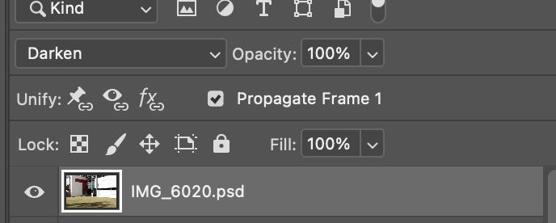
Blending modesDarken applied to a frame layer, with Propagate Frame 1 enabled so the change carries through the animation rather than affecting a single frame.
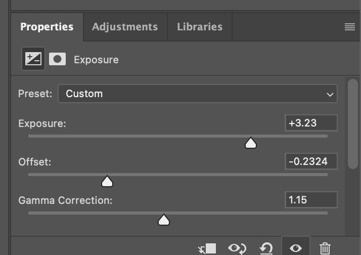
Adjustment layers — ExposureAn Exposure adjustment at +3.23 with Gamma 1.15, driving one frame far brighter than its neighbours to create a flash within the loop.
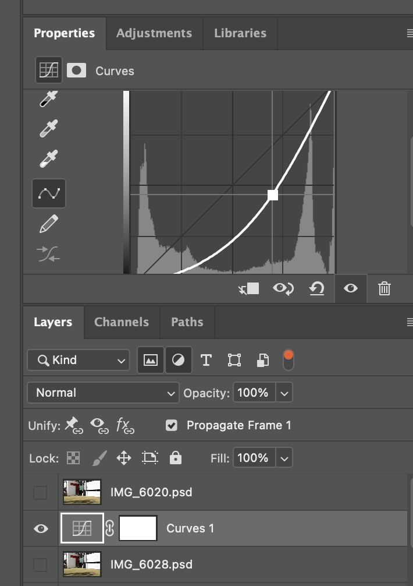
Adjustment layers & clipping masks — CurvesA Curves adjustment sitting between two frame layers with a steeply lifted curve. Because it affects only the layers below it, the tonal shift enters partway through the loop rather than applying to the whole animation — an aesthetic change that is also a temporal one.
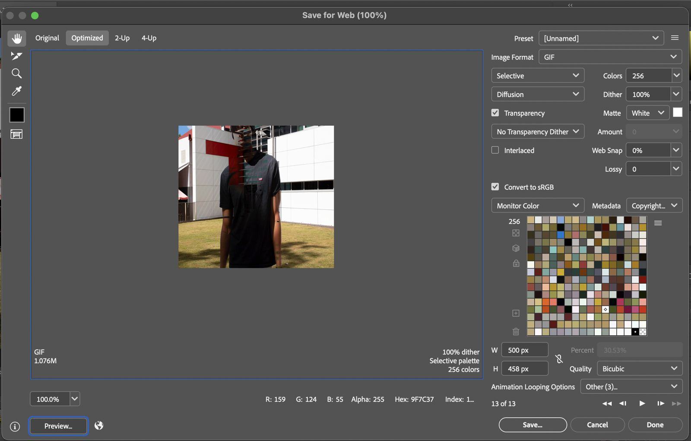
GIF export parameters — 01Save for Web at 500 × 458 px, GIF, Selective palette, 256 colours, 100% Diffusion dither. Looping set to Other (3) — the animation plays three times and stops. File size 1.076 MB.
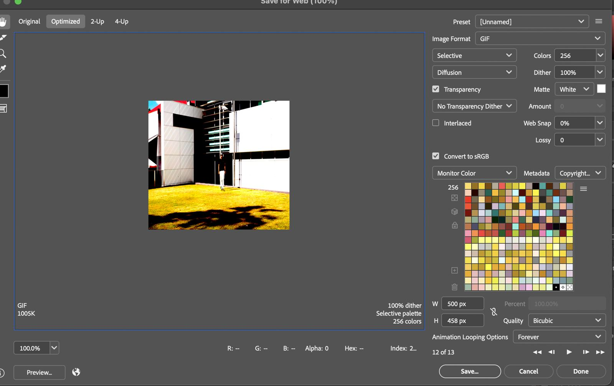
GIF export parameters — 02The same dimensions and palette with looping set to Forever, at 1005 KB. Changing only the looping option changes how the work is read: a finite three-play sequence has a beginning and an end, while an infinite loop has neither.
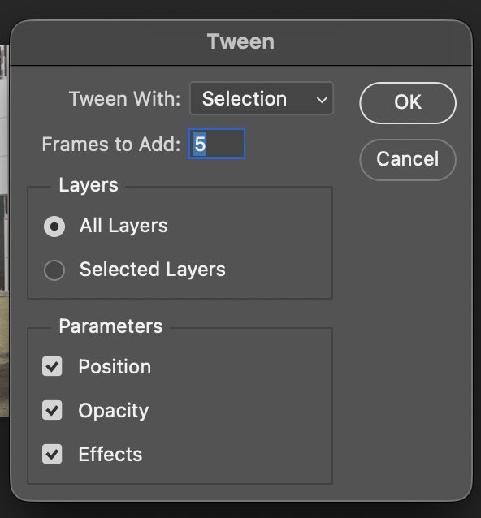
Tweening — the Tween dialogTweening two selected frames with Frames to Add: 5, applied to All Layers, interpolating Position, Opacity and Effects. Photoshop generates the five intermediate states rather than requiring them to be built by hand — the same principle as keyframe interpolation in After Effects, applied to a frame-based timeline.
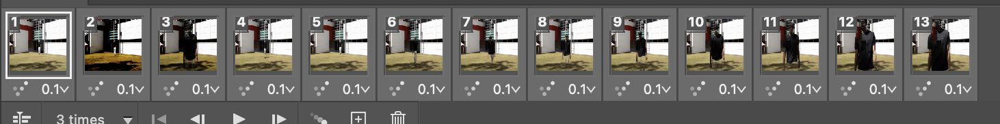
Frame duration — 0.1 sThe same thirteen source frames with the frame duration cut from 0.5 s to 0.1 s. At a tenth of a second per frame the loop stops reading as a sequence of stills and becomes continuous motion — the same material, a completely different temporal quality.
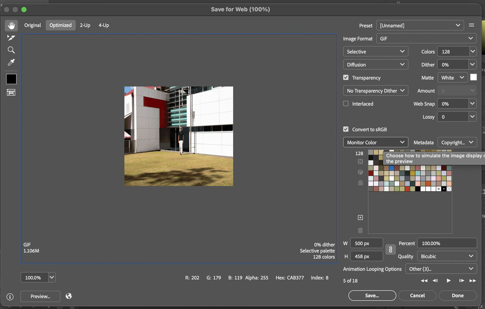
Tweening — 13 frames to 18Export settings at 128 colours with dither dropped to 0%. The frame counter reads 5 of 18: five tweened frames have been generated between two of the originals, so the thirteen-frame animation now runs to eighteen. Tweening interpolates the in-between states rather than requiring them to be drawn, softening the step between two frames into a graded transition.
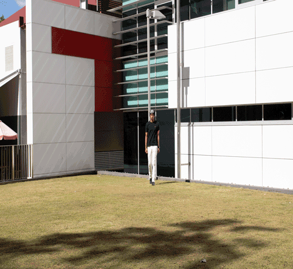
GIF 01 — tweened, 0.1 s framesThe first animation rebuilt with tweening applied and the frame duration shortened to 0.1 s. Against the versions below, the difference is legibility of motion: the tweened in-between frames remove the jump between states, and the shorter hold means the eye reads movement rather than a succession of separate photographs.GIF 02Thirteen frames at 0.5 s each, no tweening. The half-second hold reads as deliberate and stepped — closer to a slide sequence than to motion.
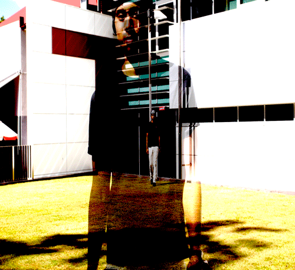
GIF 03The same frame set with blending mode and adjustment layers active, producing tonal jumps between frames that give the loop an irregular visual rhythm on top of its even timing.
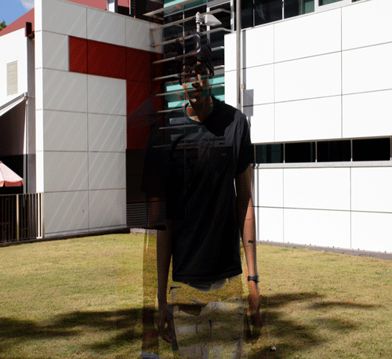
GIF 04Exported with different palette and looping parameters. Of the four, this one holds together best as a loop — the return to the first frame is least visible.
Week 05 · Task 05
Image sequences in After Effects
Working with image sequences as a fundamental basis of motion design — a non-linear form of motion — experimenting in the After Effects timeline with image speed, transition and duration, and applying effects through adjustment layers and keyframes across six video outputs.
Preparing the sequence — cropThe whole sequence cropped to a locked 16 × 9 aspect in Lightroom before export, so the frames arrive in After Effects already matching the composition and need no scaling.
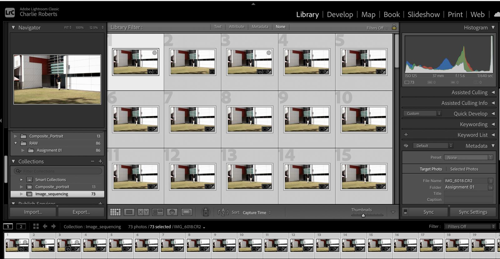
Export set — Image_sequencingA separate collection of 73 frames, all selected, exported as TIFF into After Effects/Source. Consistent naming across the set is what lets After Effects read them as one sequence rather than 73 stills.
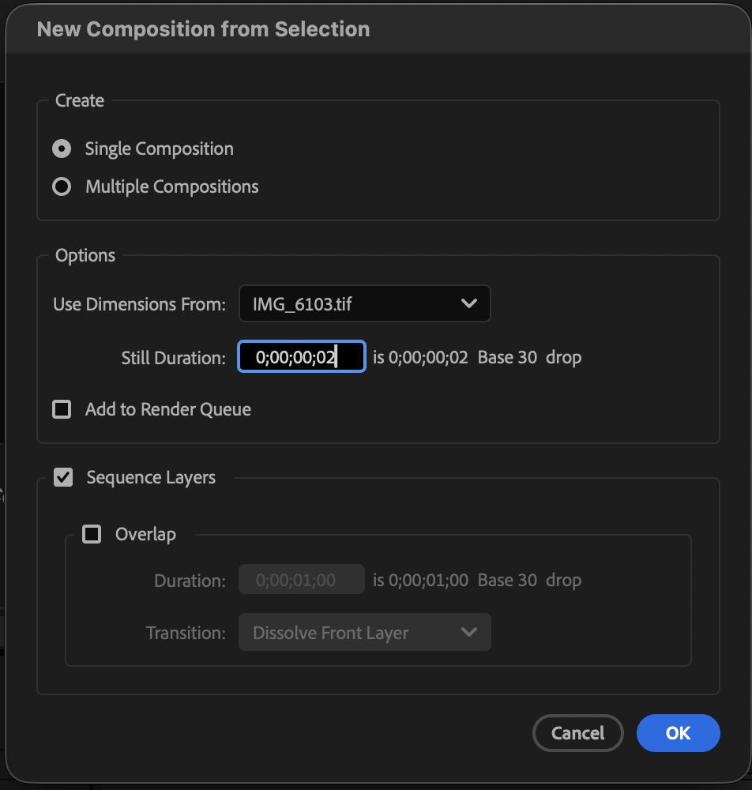
Building the compositionNew Composition from Selection with Still Duration 0;00;00;02 and Sequence Layers enabled. Sequence Layers is the critical setting — without it the frames stack at time zero and produce a single image instead of an animation. Still Duration is the direct control over playback speed.
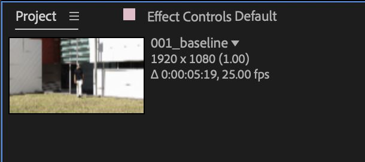
Output 01 — baseline · 2 frames per image1920 × 1080, 25 fps, running 5 s 19 f. Two frames per image gives roughly 12 images per second — the standard stop-motion rate, fast enough to read as movement while each frame is still individually visible. This is the reference every other output is compared against.
Output 02 — image speed · 1 frame per imageThe same 73 frames compressed to 2 s 22 f. Halving the still duration doubles the speed, and at 25 images per second the individual frames stop being separable — the stepped, hand-made quality of the baseline disappears and the sequence reads as continuous video.
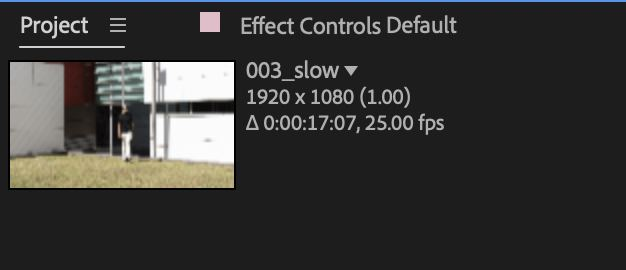
Output 03 — duration · 6 frames per imageTripling the still duration extends the same material to 17 s 7 f. Each frame now holds long enough to be looked at rather than passed through, and the work shifts from animation toward a sequence of held photographs — the movement becomes something the viewer infers between frames rather than sees.
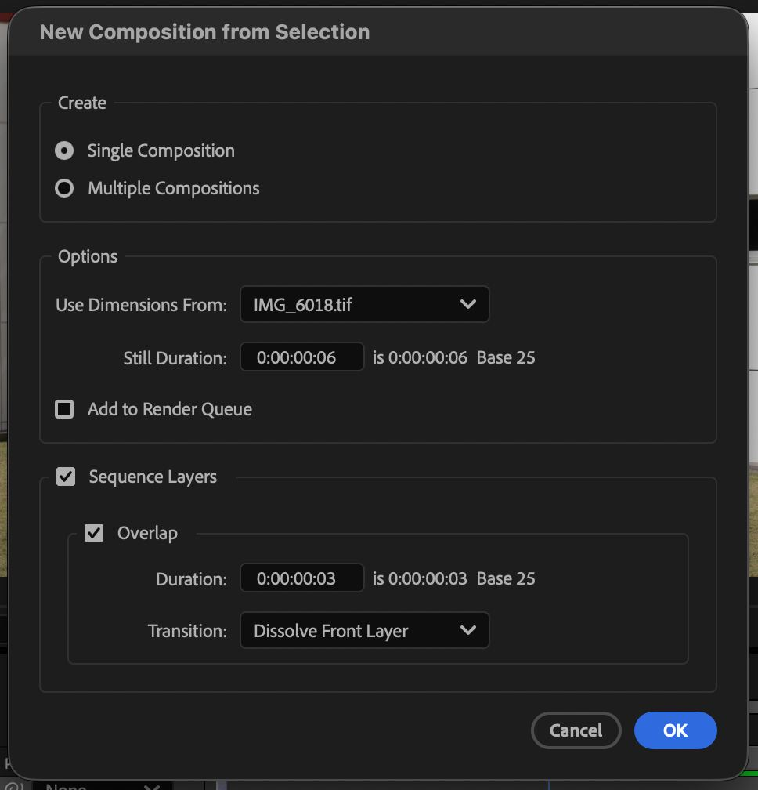
Output 04 — transition · dissolve, 3 frame overlapStill Duration 0:00:00:06 with Overlap enabled at 0:00:00:03 and Transition set to Dissolve Front Layer. Each frame now cross-fades into the next across three frames instead of cutting. The hard temporal boundary between images softens, and the walking figure blurs into a continuous drift rather than a series of steps.
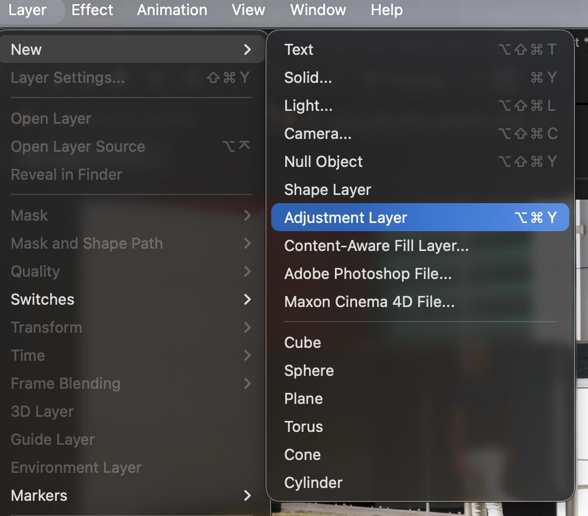
Adding the adjustment layerLayer > New > Adjustment Layer, placed above the full stack so its effect applies to every frame beneath it.
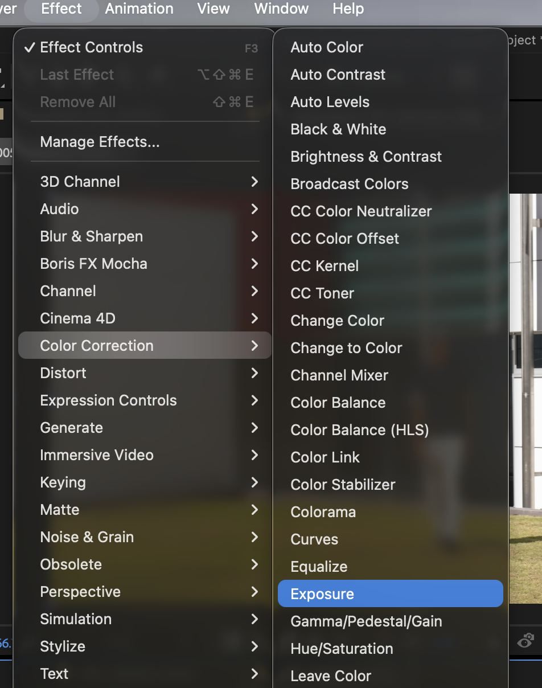
Applying the effectEffect > Color Correction > Exposure applied to the adjustment layer rather than to any individual image.
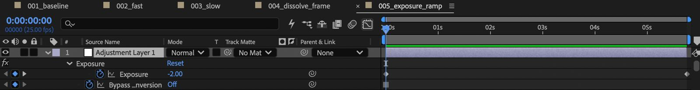
Keyframe 01 — 0:00Exposure set to −2.00 at the first frame, with the stopwatch enabled to record it.
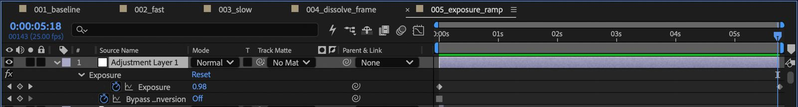
Keyframe 02 — 5:18Exposure at +0.98 on the last frame. Two keyframes are all that is needed; After Effects interpolates every value between them.
Output 05 — keyframed exposure rampThe sequence opens almost black and resolves to full exposure across its length. Because the ramp is continuous while the underlying image sequence is stepped, two different temporal logics run at once — a smooth arc laid over a staccato one — and the result has a direction and an ending the raw sequence does not.
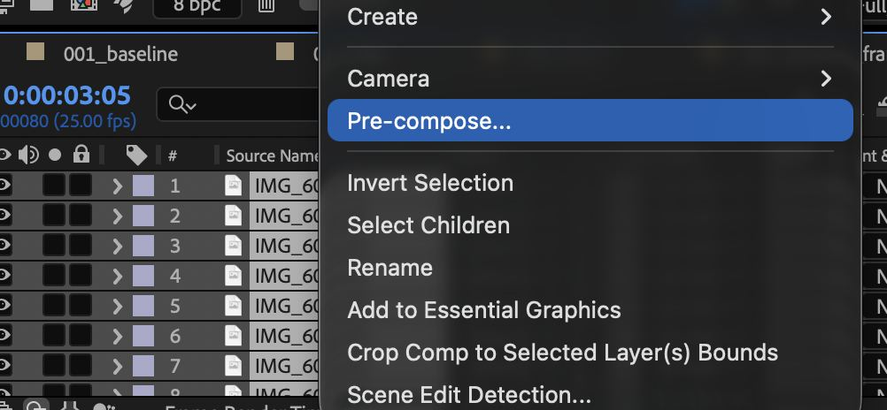
Pre-composingAll 73 layers pre-composed into 06_source so the whole sequence could be time-manipulated as a single object.Enable Time RemappingLayer > Time > Enable Time Remapping, which decouples playback time from source time.
Output 06 — time remapping · speed rampThe full interface with 006_time_remap open, the pre-composed layer carrying a Time Remap property, and the comp trimmed to 2 s. Moving the final keyframe earlier forces the source to play through faster, and easing the keyframes makes it accelerate and decelerate within a single output. This is the clearest demonstration of non-linear motion in the set: the footage no longer runs at a fixed relationship to real time at all.
Export parameters — image size and formatAll compositions queued in Adobe Media Encoder and rendered to H.264 / mp4 at 1920 × 1080, 25 fps, written back into the After Effects folder of the database. H.264 was chosen as the delivery codec because it is what YouTube re-encodes from most cleanly, and mp4 keeps the files small enough to upload without degrading the outputs.
Week 06 · Task 06
Reflective Report
[Approximately 300 words — to be written after completing the Assignment 01 Self Evaluation Form.]
Prompts drawn from what the journal above actually shows, to write against rather than copy:
· The database in Task 01 was built before any images existed, and it held for the whole assignment — what did having a fixed structure make possible later, and where did it still get untidy?
· Task 02 produced four markedly different treatments from one capture. Which reading of the subject do you think is strongest, and what does that tell you about how much of an image is decided at capture versus in the Develop Module?
· The composite moved from stacked transparency to cut-out figures. Why did the first approach fail, and what did solving it teach you about layers as design elements?
· Across Tasks 04 and 05 you controlled the same variable — duration — in two different applications. Where were the limits of the Photoshop Timeline, and what did After Effects let you do that it could not?
· Output 06 was the hardest technically. What went wrong with the time remap keyframes, and what do you now understand about non-linear time that you did not in Week 01?